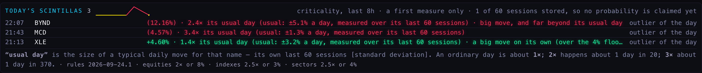
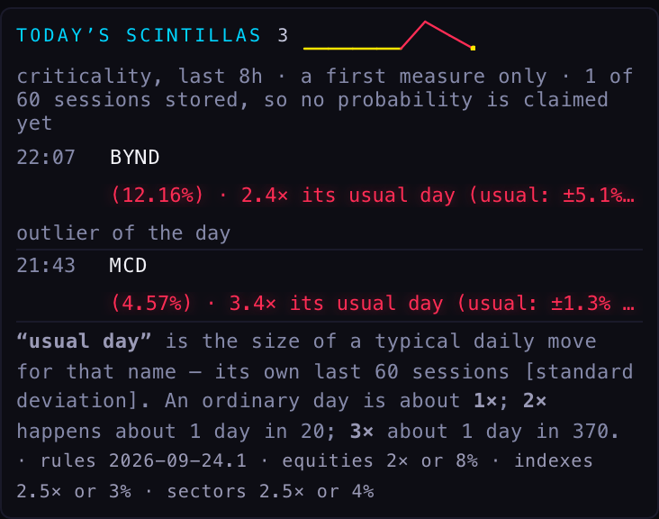

TODAY'S SCINTILLAS · part two
24 September 2026 · Hub branch hub/scintillas-2-20260924 · nothing deployed
Three things changed. The tape at the top of the dashboard now flashes as a release gets close — that flashing is the scintillation. Nowhere on screen does it say σ any more: a move is said as "2.4× its usual day". And the rules that decide what counts as a scintilla now live in one file you can edit, with numbers chosen by measuring the last 60 sessions rather than by guessing.
1 · The top tape flashes as the moment comes
Nothing new was drawn. The queue already in the header — NEXT ● Core CPI 08:30 in 15m — now
pulses through the same 520 ms glow the price numbers use:
| When | What it does | What the browser actually painted |
|---|---|---|
| More than 15 minutes out | nothing at all | no glow — silence is information |
| Last 15 minutes | a gentle pulse, one every 20 seconds | state s-soon, colour rgb(200,200,200), shadow 0 0 8px rgba(200,200,200,.55) |
| Last 5 minutes | quicker, one every 6 seconds | state s-near, same grey |
| The release minute | a hard flash every 2 seconds, for two minutes | state s-due, same grey |
| The number lands | ONE glow in the Economic room's own colour | rgb(255,48,96) — the room's red for a hotter-than-expected print |
The grey is deliberate: before a number prints there is no direction to imply. The red only appears once there is an actual to read, and it is the same red the Economic room already paints that surprise.
T−15: "in 15m", pulsing gently.
T−5: "in 5m", quicker.
The release minute: "now", flashing hard.
Landed: 3.4 against an estimate of 3.1 — "+0.3 hotter" — one glow in the room's red, then still.
2 · Plain words instead of the Greek letter
You asked what σ meant and said you did not think we were using it. The maths has not changed — the number behind it is still how far a move is from that name's own history — but the screen now says it in words:
And under the strip, once, in one line:
An earnings surprise reads "3.1× its usual surprise (usual: ±4.0% over its last 8 reports)"; an economic print reads "2.1× this release's usual miss". The letter now appears in exactly one place on the whole page: the word "standard deviation" in that explainer, in brackets, for the record.

The strip at 1680, with the explainer under it.

The same strip on a phone.
3 · The rules, in one file you can change
They live in data/scintilla-rules.json. The Hub fetches that file; the detector is handed the
same file. Two families, and a day counts if either one fires:
- Statistical — the move against that name's own usual day, with its own bar per asset class, plus a smallest move it will accept (so a dead-flat name printing 4× a 0.3% move is not a pointer).
- Raw — a plain percentage floor, so a big move on a quiet name still counts.
| Asset class | Statistical | …but at least | Raw floor | Why |
|---|---|---|---|---|
| equities | 2× its usual day | 1.0% | 8% | 2× is about one day in twenty; 8% is worth a look whatever the history says |
| index ETFs | 2.5× | 0.5% | 3% | a whole market wanders inside its own band most days; 3% is a market event on its own |
| sector ETFs | 2.5× | 0.8% | 4% | a basket needs a real push; 4% across a sector is a rotation |
| crypto | 3× | 3.0% | 8% | its ordinary day is already large and its tails are fat |
| futures | 2.5× | 1.0% | 3.5% | index and commodity contracts behave like their underlying market |
Changing one is changing one number in that file, then node scripts/build-scintilla-rules.mjs
so the detector's own copy follows. A test fails if the two ever drift.
4 · What those defaults would actually have produced
Measured, not guessed: scripts/scintilla-rule-counts.mjs replayed the last 60 sessions of
daily bars from the chart API for 125 of the 364 names (every fund named in the rules, plus every 4th
single name) and counted what each family would have marked, each day.
| Family | Per day, average | Median | Busiest day | Quietest |
|---|---|---|---|---|
| statistical only | 3.5 | 3 | 18 | 0 |
| raw only | 4.8 | 4 | 25 | 0 |
| both at once | 1.2 | 1 | 11 | 0 |
| either — what you would see | 7.0 | 6 | 32 | 0 |
Over 60 sessions, by class: single names 264 scintillas, sector funds 110, index funds 47. The sample is about a third of the universe, so expect roughly three times these counts across all 364 names — call it 15–20 on an ordinary day, and a lot more on a day the whole market moves.
The first draft of the raw floors was far too loud: at 5% for equities, 1.5% for indexes and 2.5% for sectors it fired 14.7 times a day on that sample — a wall, not a pointer. The numbers above are the ones the replay says leave a list worth reading.
Where each number comes from
- The move and the usual day — daily bars from the chart API (
/candles), the same source the charts draw. The usual day is the spread of that name's own last 60 daily moves; under 20 sessions of history nothing is claimed at all. - The rows on the strip —
public.scintillas, written by thescintillas-detectfunction every ten minutes through the session and once after the close. - The tape's own times and estimates — the economic calendar the header queue already reads.
- The surprise colour — the Economic room's own rule, unchanged: hotter inflation or weaker labour than expected is the red side.
What could be wrong
- The counts are a sample. 125 of 364 names, and no crypto or futures symbol is in the chart API universe at all, so those two rows of the table are reasoned, not measured.
- 60 sessions is one quarter of one market. A calm quarter makes 2× look rarer than it is.
- "1 day in 20" assumes a normal bell curve. Real markets have fatter tails, so 2× and 3× days happen somewhat more often than those odds suggest. The wording says "about" for that reason.
- The tape flash was proven in a headless browser at a fixed clock, not watched live through a real release. The cadence is pinned by tests; the feeling of it is not.
- An asset class is a list of symbols. A new ETF is treated as a single company until someone adds it to the file.
What I did not do
- Nothing was deployed, pushed or merged; no function was redeployed; no schedule changed.
- The TODAY'S SCINTILLAS strip stays exactly where it is — you said not to remove it.
- No new widget, no second tape, no change to the queue's four states, its category colours or its countdown.
- Nothing was written to any price, estimate or result table.
- The bottom ticker tape was left alone.